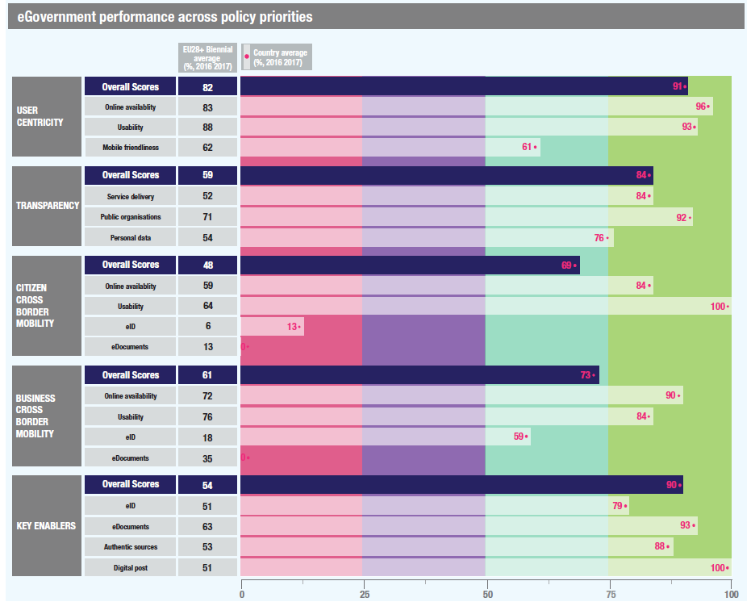

ISA2
Table of Contents
Digital Government Factsheet 2019
Estonia
ISA2
Country Profile 3
Digital Government Highlights 6
Digital Government Political Communications 7
Digital Government Legislation 10
Digital Government Governance 16
Digital Government Infrastructure 25
Digital Government Services for Citizens 31
Digital Government Services for Businesses 39
Country Profile
Basic data
Population: 1 319 133 inhabitants (2018)
GDP at market prices: 25 656 million Euros (2018)
GDP per inhabitant in PPS (Purchasing Power Standard EU 28=100): 79 (2017)
GDP growth rate: 3.9% (2018)
Inflation rate: 3.4% (2018)
Unemployment rate: 5.8% (2017)
General government gross debt (Percentage of GDP): 8.7% (2017)
General government deficit/surplus (Percentage of GDP): -0.4% (2017)
Area: 45 200 km²
Capital city: Tallinn
Official EU language: Estonian
Currency: Euro
Source: Eurostat (last update: 15 March 2019)
Digital Government Indicators
The following graphs present data for the latest Digital Government Indicators for Estonia compared to the EU average. Statistical indicators in this section reflect those of Eurostat at the time the Edition is being prepared.
Digital Government State of Play
The graph below is the result of the latest eGovernment Benchmark report, which monitors the development of eGovernment in Europe, based on specific indicators. These indicators are clustered within four main top-level benchmarks:
User Centricity – indicates to what extent (information about) a service is provided online and how this is perceived.
Transparency – indicates to what extent governments are transparent regarding: i) their own responsibilities and performance, ii) the process of service delivery and iii) personal data involved.
Cross-Border Mobility – indicates to what extent EU citizens and businesses can use online services in another country.
Key Enablers – indicates the extent to which five technical pre-conditions are available online. There are: Identification (eID), Electronic documents (eDocuments), Authoritative Sources, and Digital Post. Digital Post refers to the possibility that governments communicate electronically-only with citizens or entrepreneurs through e.g. personal mailboxes or other digital mail solutions.
These top-level benchmarks are measured using a life-events (e.g. mystery shopping) approach. Eight life events are included in the overall eGovernment performance score. Four of these life events were measured in 2013, 2015 and 2017 and the other four were measured in 2012, 2014, 2016, and again in 2018. The life events measured in 2017 were Regular business operations, Moving, Owning and driving a car and Starting a small claims procedure. The life events measured in 2018 are Business start-up, Losing and finding a job, Family life and Studying.
Source: eGovernment Benchmark Report 2018 Country Factsheet
Digital Government Highlights
Digital Government Political Communications
Following the mid-term review of the Digital Agenda 2020 for Estonia, the expanded Agenda includes more detailed sub-objectives in two fields: development of the information society and increasing cyber security.
The third Cybersecurity Strategy was adopted, defining the longer-term vision for the field, the objectives, priority activity areas, the roles and functions necessary for achieving it.
In March 2018, Estonia launched a task force to adopt a national strategy for Artificial Intelligence. The strategy focused on the adoption of AI in the public sector for creating additional value and more efficiency through the deployment of AI-enabled systems.
In December 2018, the Government approved the concept of moving towards a more seamless government. The goal was to kick off with 15 life-event/business-event services that will be offered proactively for citizens. Compared to current eServices, the new seamless services will function proactively and are more user-centred.
Digital Government Legislation
In May 2018, the Cybersecurity Act entered into force, the purpose of which was to strengthen the security of digital systems used in providing vital and other socially important services to the public.
In November 2018, a regulation regarding cross-border exchange of information for health services came into force.
In December 2018, the amendments to the Public Information Act came into force, which created requirements regarding accessibility of the websites and mobile applications of public sector bodies.
The Act on Amendments to the Accounting Act (795 SE), initiated by the Government, made machine-processable invoices mandatory in invoicing with the public sector from 1 July 2019.
Digital Government Governance
Ms. Kert Kingo is the Minister of Foreign Trade and Information Technology.
Mr. Raul Rikk has become the National Cyber Security Policy Director.
Mr. Kristo Vaher has been appointed as Government Chief Technology Officer.
Mr. Ott Velsberg is now the Government Chief Data Officer.
Mr. Margus Noormaa is the new head of RIA (Information System Authority).
Digital Government Infrastructure
The eesti.ee portal, the gateway to government information and eServices, was renewed.
- Estonia launched the first version of a government code repository, making software solutions built for the government publicly accessible at koodivaramu.eesti.ee.
Digital Government Services for Citizens and Businesses
The digital registrar option was added to digilugu.ee and for hospitals, offering the possibility to book ambulatory appointments, pay bills, view and cancel registered ambulatory appointment times. This adds the possibility to do different transactions in one view for all health care institutions that interact with the solution.
Digital Government Political Communications
Specific political communications on digital government
Digital Agenda 2020 for Estonia
The Digital Agenda 2020 for Estonia was reviewed in 2018. The development plan provided guidance for creating a well-operated national information and communication technology environment. The main goals included an ICT structure that fostered economic growth, national development and welfare of its population, increased number of jobs with higher added-value, improved international competitiveness and better life quality, smarter governance and increased awareness of eGovernance all over the world. The Agenda was adopted in 2014 and the current document was adopted after the mid-term review at the end of 2018.
Key enablers
Access to public information
Open Government Partnership
In 2018, the government approved the new Open Government Partnership action plan for 2018-2020. The objective of this action plan was to foster open and inclusive policy-making at a national as well as a local level. At the national level, requirements were defined for creating a new information system that would support a more inclusive process of drafting legislation.
eID and Trust Services
White Paper on eID
The White Paper described the 10-year vision for the national ID card and eIdentity.
Security aspects related to digital government
Cybersecurity Strategy 2019-2022
The Cybersecurity Strategy 2019-2022 is the third strategy document in the field of cybersecurity and general security, defining the longer-term vision for the field, the objectives, priority activity areas, the roles and functions necessary for achieving it. It is the basis for planning activities and resources. The strategy is based on the experiences from the two previous periods (2008-2013 and 2014-2017). As a horizontal strategy, it involves parties who contribute to ensuring Estonian cybersecurity, the public sector (both civilian and military defence), vital service providers, businesses operating in the field, and universities and research institutes. The goal of compiling this document is to enter into agreements and lay conditions for implementing a comprehensive, systematic and inclusive sectoral policy.
Interconnection of base registries
No political communication was adopted in this field to date.
eProcurement
No political communication was adopted in this field to date.
Domain-specific political communications
Management and development of services and information governance
For the management and development of services and information governance, the Ministry of Economic Affairs and Communications passed a government regulation, Principles for Managing Services and Governing Information, as well as accompanying guidelines for implementing the regulation. The principles specifically stipulated the prohibition to request the resubmission of data that is already in any database belonging to the state information system.
National coordination of updated ICT strategies in different domains
Estonia is currently undergoing the national coordination of updated ICT strategies in different domains, or more specifically the ICT strategies of: Ministry of Education and Research; Ministry of Finance and their Information Technology Centre; Ministry of the Environment and the IT and Development Centre; Ministry of the Interior; Ministry of Social Affairs and their Health and Welfare Information Systems Centre; Ministry of the Interior and their IT and development centre; Ministry of Culture, Ministry of Rural Affairs; Ministry of Justice and their Centre of Registers and Information Systems; The Chancellery of the Riigikogu; The Government Office; Supreme Court of Estonia; Office of the President.
Interoperability
Estonian Interoperability Framework
The Estonian eGovernment style permits the Estonian Interoperability Framework to be exemplary regarding the alignment with the terminology and general principles of the EIF. One of the most remarkable examples of this alignment, related to base registries in general and the Only-Once principle in particular, is the EIF Underlying Principle 9: Administrative simplification. In this regard, the Estonian framework ensures its compliance with the EIF through the fact that “when the documentation of databases is coordinated in the Management System of State Information System (RIHA), the purposefulness of data collection and compliance with the principle of a single request for data are checked”.
Digital Agenda 2020 for Estonia
The Digital Agenda 2020 for Estonia also focuses on interoperability. It states: “The central components of the state information system and solutions for interoperability will be developed so that they conform to the development of technology and function in a secure manner.” All national digital initiatives stem from the agenda and must be in alignment with it.
Emerging technologies
National Strategy on Artificial Intelligence
Estonia has a national strategy on AI, published in May 2019. As Estonia has made AI a priority topic at the national level based on the Digital Agenda 2020 for Estonia, it stated in the agenda that the general objective is to have at least 50 use-cases of artificial intelligence in the public sector by 2020. The strategy was prepared by the national task force, led by Government Office and the Government CIO.
The task force had the duty to prepare by May 2019:
a) The legal framework to enable the use of fully autonomous software systems in all different areas and regulate the relevant liability, safety and other issues;
b) A national AI plan or strategy on how Estonia could advance the uptake of AI solutions in public sector as well as a wider economy;
c) Raising public awareness related to all things AI – from employment market challenges to education as well as potential use cases of AI in the public sector.
Furthermore, the updated national Digital Agenda 2020 also specifies that in order to stimulate innovation, pilot projects for new technologies for the development of new solutions for the state information system and central components will be carried out, such as artificial intelligence, blockchain, the Internet of Things, and technologies that advance privacy.
Digital Government Legislation
Specific legislation on digital government
No legislation was adopted in this field to date.
Key enablers
Access to public information
Public Information Act
The first version of the Public Information Act (PIA) took effect in January 2001. A newly revised, updated Public Information Act entered into force on 1 January 2015. It started the transposition of the provisions of the revised Directive (2013/37/EU) into national law. The Act covered State and Local Agencies, legal entities in public law and private entities that are conducting public duties including educational, health care, social or other public services. Any person could make a request for information, which was registered; the holder of information had to respond within five working days. Fees were waived if the information was requested for research purposes. Departments and other holders of public information were required to maintain websites and post an extensive list of information on the Web. These entities were also required to ensure that information was not outdated, inaccurate or misleading. In addition, email requests were treated as official requests for information. The Act was enforced by the Data Protection Inspectorate. Since 1 January 2008, the Act has also been regulating the field of the former Databases Act (in force from 1997 to 2007).
The Public Information Act covered the provisions of the EU Directive 2003/98/EC on the re-use of public sector information (PSI). Estonia thus notified the full transposition of the PSI-directive in July 2009. The transposition of the EU Directive 2013/37/EU into Estonian legislation is currently also under way.
In December 2018, the amendments to the Public Information Act came into force, which created requirements regarding accessibility of the websites and mobile applications of public sector bodies (increasing the accessibility so that the public as a whole, but especially people with special needs could communicate with the government and use digital government services more conveniently and effectively.
The Public Information Act ensured that citizens, businesses and other branches of public administration had access to information meant for public use. The Act’s purpose was to create public control mechanisms over the fulfilment of public duties.
Archives Act
The Archives Act entered into force on 1 May 1998. The Act set the principles for collecting, evaluating, archiving, preserving, accessing archival documents and for archiving activities. It set the guidelines for private records entered in the archives' register and the transfer of ownership of private records also entered in the archives' register.
eID and Trust Services
Electronic Identification and Trust Services for Electronic Transactions Act
The new Electronic Identification and Trust Services for Electronic Transactions Act adopted on 12 October 2016, constituted the effective transposition of the EU’s eIDAS regulation. This act replaced the Digital Signatures Act (DSA), entered into force on 15 December 2000 and was revised in 2014. The DSA gave digital and handwritten signatures equal legal value and set an obligation for all public institutions to accept digitally-signed documents.
In January 2019 the amendments to the Electronic Identification and Trust Services for Electronic Transactions Act entered into force. The State Information Authority was now the single Competent Authority regarding rights and obligations arising from the eIDAS regulation.
Security aspects related to digital government
Cybersecurity Act
In May 2018, the Cybersecurity Act entered into force. Its purpose was to strengthen the security of digital systems used in providing vital and other socially important services to the public. The Act provided for the requirements for the maintenance of network and information systems essential for the functioning of society and state and local authorities’ network and information systems, liability and supervision as well as the bases for the prevention and resolution of cyber incidents.
Personal Data Protection Act
The first Personal Data Protection Act (PDPA) entered into force on 19 July 1996. The Act was amended in 2003, to be made fully compliant with the EU Data Protection Directive 95/46/EC, and amended again in January 2008 and renewed in 2019. The Act protected the fundamental rights and freedoms of persons with respect to the processing of their personal data, in accordance with the right of individuals to obtain freely any information that is disseminated for public use.
The 2008 version of the Act introduced several changes. Firstly, the previous classification of personal data into three groups (non-sensitive personal data, private personal data and sensitive personal data) was replaced by two data categories: 'personal data' and 'sensitive personal data', the latter being the sub-class under special protection. Secondly, all processed personal data are protected and registered by Chief processors (i.e. controllers) with the Data Protection Inspectorate, the data protection supervision authority. Moreover, the new PDPA Act extends all general principles applying to the processing of personal data and to the processing of the personal identification code (the unique number assigned to every Estonian citizen and resident).
From 1 January 2015, the Data Protection Inspectorate may submit reports concerning significant matters which have an extensive effect or need prompt settlement which become known in the course of supervision over compliance with the Act to the Constitutional Committee of the Riigikogu and the Legal Chancellor. The current version can be found here.
System of Security Measures for Information Systems
This Regulation entered into force on 1 January 2008. It established the system of security measures for information systems used for processing the data contained in state and local government databases and for information assets related therewith. The system consisted of the procedure for the specification of security measures and the description of organisational, physical and IT security measures to protect data. However, it was underlined that this Regulation does not apply to the security of information systems processing state secrets.
Interconnection of base registries
Estonian Base Registries
The concept of a base registry has been phased out in Estonia. Instead, the basic data principle is used. Databases are regulated by law (some of them are established by government regulation in secondary laws) as primary sources of basic data, therefore unique data. Hence, in Estonia all registries are base registries concerning unique data collected in respective registries.
Furthermore, registry interconnection has been implemented between the business registries of Estonia and Finland with the use of X-Road infrastructure. The Secretary General of the Ministry of Justice Tõnis Saar and the Director General of the Finnish Patent and Registration Office Antti Riivari signed an agreement in February 2019 in Helsinki, under which data can be exchanged automatically between the business registers of the two countries. National legislation did not need to be changed for that purpose.
Business Registry
The Business Registry is covered by the Commercial Code and its Amendment. The law expresses the basic principles of Estonian entrepreneurship and regulates any company formation in Estonia. Company registration in Estonia can be performed electronically.
Population Registry
The Population Registry is regulated by the Population Registry Act. It provides information regarding its data composition, the procedure for the introduction and maintenance of the Registry, processing and access to its data, the entry of data on residence in the population registry and the supervision over the maintenance of the population registry. The purpose of this Act is to ensure the collection of main personal data of the subjects of the population registry in a single database for the performance of functions of the state and local governments.
Land Registry
The Land Registry is set out in the Land Registry Act, which stipulates the maintenance procedure of the land registry, the data content, the land registry entries, the reservation, documents necessary for registration, corrections of entries, access and extracts, etc.
Vehicle Registry
The Vehicle Registry is established by the General Traffic Act. The law specifies the content of the Registry, by which ministry will it be governed, what data is contained and who may access it.
eProcurement
Public Procurement Act
A Public Procurement Act came into force in May 2007, and the current version has transposed the EU Directives on public procurement. It includes legal provisions enabling the further development of eProcurement (eAuctions, Dynamic Purchasing System, eCatalogues etc.) so as to give better opportunities for taking forward a fully electronic Procurement tendering process.
It is worth mentioning that the previous version of the Public Procurement Act (October 2000) had already established rules for the eNotification of public tenders through the country’s Public Procurement State Register.
Act on Amendments to the Accounting Act
The Estonian Parliament approved on 20 February 2019, a bill pursuant to which the accounting of the state fully switched to electronic invoicing: starting from July 2019, the public sector only accepted eInvoices. The Act on Amendments to the Accounting Act (795 SE), initiated by the Government, made machine-processable invoices mandatory in invoicing with the public sector. The amendments aimed to reduce the workload and the time required in invoicing with the public sector. The European Union Directive on eInvoicing was also transposed. An electronic invoice is a machine-readable document drawn up on the basis of a common standard, sent from one software system to another to avoid entering data by hand.
Domain-specific legislation
Information Society Services Act
The Information Society Services Act Information Society Services Act was passed on 14 April 2004 and entered into force on 1 May 2004. It implemented EU Directive 2000/31/EC on certain legal aspects of information society services, in particular electronic commerce, in the Internal Market. It established the requirements pertaining to information society service providers, as well as the organisation of supervision and liability in the case of violation of these requirements.
Simplified Business Income Taxation Act
On 1 January 2018, the Simplified Business Income Taxation Act entered into force. It established the concept of a business account. The business account was aimed at small companies (one-man private limited companies and self-employed persons) to operate without bureaucracy. The Act enabled a physical person to open a business account from which 20% would automatically go to the Tax and Customs Board. Therefore, they exposed themselves to the Tax and Customs Board and in return, the account holder need not submit annual reports and submit tax returns.
Principles for Managing Services and Governing Information
In June 2017, the Principles for Managing Services and Governing Information (a Government Regulation) entered into force obliging all authorities to ensure:
- Management and quality of the direct public services;
- Management and quality of the processes;
- Information governance and quality thereof;
- Every sub-activity of information governance and quality thereof of the authority.
With this Regulation, Estonia adopted a new approach to developing public services. From now on public services must be life-event based and where possible, pro-active. Estonia is currently developing a methodology on how to develop and offer such public services.
This Regulation obliged authorities providing public services to maintain an up-to-date list of its own direct public services and of the support services provided to other authorities, containing at least significant services. Furthermore, the management of the processes behind the services must have a clear owner. The problem that authorities often face is that they do not have a clear view of their services (as defined in the second article of the Regulation).
The Regulation also established a web of coordinators:
The Ministry of Economic Affairs and Communications is responsible for the management of direct public services, including upon determination, sharing and exchange of the information necessary for providing such services;
The Data Protection Inspectorate in organising access to and protection of information;
The Estonian Information System Authority for the implementation of the requirements for the architecture of the state information system and for the key components of the state information system.
The coordinators, while executing their tasks, have the following functions:
Planning the main directions of development and the activities supporting development;
Issuing guidelines and recommendations;
Monitoring the implementation of planned activities and application of guidelines;
Managing communication;
Cooperating with other coordinators;
Engaging other parties as necessary.
The Regulation aims to establish a common view how to develop, maintain and provide high quality public services.
Regulation on Cross-Border Exchange of Information Regarding Health services
In November 2018, the Regulation regarding cross-border exchange of information regarding health services came into force. The purpose of the regulation was to enable people abroad to have better access to medical care and medicines thanks to electronically exchanging prescription data between countries. Estonia and Finland became the first two countries in Europe to exchange medicine prescription data. As of January 2019, the first EU patients could use digital prescriptions issued by their home doctor when visiting a pharmacy in another EU country: Finnish patients are now able to go to a pharmacy in Estonia and retrieve medicine prescribed electronically by their doctor in Finland. The initiative applies to all ePrescriptions prescribed in Finland and to the Estonian pharmacies that have signed the agreement. The novelty of this initiative is that the ePrescriptions are visible electronically to participating pharmacists in the receiving country via the new eHealth Digital Service Infrastructure, without the patient having to provide a written prescription.
Interoperability
Public Information Act
The Public Information Act set out various elements related to interoperability. These are:
Prohibition of collection of duplicate data.
Concept of base data (defining authoritative source for every piece of data collected in public sector), going further than concept of base registries.
Mandatory consultation process with IT coordination, data protection and statistics bodies when preparing legal acts establishing new public sector databases or making changes for existing ones.
This Act serves as the legal basis for secondary legislation establishing:
The classifications system;
The geodetic system;
The system of address details;
The system of security measures for information systems;
The data exchange layer of information systems;
The administration system of the state information system.
Emerging technologies
Legislation on Technology
Estonia intends to develop a technology-neutral legal environment, meaning unless necessary, no legislation regarding any technology as such is drafted.
Digital Government Governance
National
Policy
Ministry of Economic Affairs and Communications
The Ministry of Economic Affairs and Communications holds political responsibility for the development of the State information policy. It elaborates the state's economic policy and economic development plans, while also drafts the respective legislation bills, in a variety of fields, among which, informatics, development of state information systems, research, and development and innovation.
| Kert Kingo Minister of Foreign Trade and Information Technology Contact details: Ministry of Economic Affairs and Communications Suur-Ameerika 1 10122 Tallinn Estonia E-mail: hele.karilaid@mkm.ee (Advisor to the Minister) Tel.: +372 7153415 Source: https://www.mkm.ee/en/ministry-contact/minister-foreign-trade-and-information-technology |
| Siim Sikkut Deputy Secretary General for IT and Telecom, Government Chief Information Officer (CIO) Contact details: Ministry of Economic Affairs and Communications Suur-Ameerika 1 10122 Tallinn Estonia E-mail: siim.sikkut@mkm.ee Tel.: +372 63 97 680 Source: http://www.mkm.ee/en |
| Kristo Vaher Government Chief Technology Officer Contact details: Ministry of Economic Affairs and Communications Suur-Ameerika 1 10122 Tallinn Estonia E-mail: kristo.vaher@mkm.ee Tel.: +372 6208149 Source: http://www.mkm.ee/en |
| Ott Velsberg Government Chief Data Officer Contact details: Ministry of Economic Affairs and Communications Suur-Ameerika 1 10122 Tallinn Estonia E-mail: ott.velsberg@mkm.ee Tel.: +372 6256417 Source: http://www.mkm.ee/en |
Government CIO Office
The Government CIO Office (formerly known as the State Information System Department) of the Ministry of Economic Affairs and Communications plays a major role in the elaboration of the Estonian Information Society Policy. It embarks on developing information society-related activities in the field of information technology and on the preparation of draft legislation in the relevant fields. The Government CIO Office's strategic tasks include the coordination of state IT-policy actions and development plans in the field of state administrative information systems (IS), such as state IT budgets, IT legislation, coordination of IT projects, IT audits, standardisation, IT procurement procedures and international cooperation in the field of state IS. The CIO Office comprises six teams: Digital Service Excellence Team; Legal Team; Financing Team; ICT Skills Team; Cybersecurity Policy Team; International Affairs Team; and Govtech team.
| Miia Mänd Chief Operations Officer, Deputy GCIO Contact details: Ministry of Economic Affairs and Communications Suur-Ameerika 1 10122 Tallinn Estonia E-mail: miia.mand@mkm.ee Tel.: +372 6256372 Source: http://www.mkm.ee/en |
| Janek Rozov Government Chief Digital Officer, Deputy GCIO Contact details: Ministry of Economic Affairs and Communications Suur-Ameerika 1 10122 Tallinn Estonia E-mail: janek.rozov@mkm.ee Tel.: +372 6256364 Source: http://www.mkm.ee/en |
| Sandra Särav Global Affairs Director Contact details: Ministry of Economic Affairs and Communications Suur-Ameerika 1 10122 Tallinn Estonia E-mail: sandra.sarav@mkm.ee Tel.: +372 55 12 001 Source: http://www.mkm.ee/en |
| Kristi Kivilo ICT Skills Coordination Director Contact details: Ministry of Economic Affairs and Communications Suur-Ameerika 1 10122 Tallinn Estonia E-mail: kristi.kivilo@mkm.ee Tel.: +372 63 97 643 Source: http://www.mkm.ee/en |
Estonian Association of Information Technology and Telecommunications (ITL)
The ITL is a non-profit organisation, aiming to unite the Estonian information technology and telecommunications companies; to promote their co-operation in Estonia's development towards an information society; to represent and protect the interests of its member companies and to express their common positions.
The main activities of the association include the popularisation of information and communication technology (ICT), the promotion of vocational education and amendment of legislation.
e-Estonia Council
The e-Estonia Council, created in 2014, (formerly Estonian Informatics Council) is a government committee that directs the development of digital society and eGovernance in Estonia.
Five experts and ICT sector representatives and three ministers are members of the Council. It is chaired by the Prime Minister. Other government institutions and experts are involved in the work upon need.
Coordination
Government CIO Office
The Department of State Information Systems (RISO), as part of the Ministry of Economic Affairs and Communications, now renamed the Government CIO Office, is the main actor in coordinating governmental ICT policy and information society policy. RISO coordinates: the state information policy and the consequent development of sustainable energy development projects in the initiation and implementation of the information society; the development of national information systems regarding international cooperation within its jurisdiction, and the initiated national information systems related to IT standardisation.
Department of Information Society Services Development (ITAO)
ITAO, also a department of the Ministry of Economic Affairs and Communications, co-ordinates the development of public sector services. It elaborates and disseminates different guidelines and manuals regarding common quality criteria for public services, life-cycle approach to public service development, choice of service channels etc.
Estonian Information System Authority (RIA)
On 1 June 2011, the Estonian Informatics Centre was restructured as the Estonian Information System Authority (RIA). The Authority's mission is to "coordinate the development and management information system so that Estonian citizens are served in the best possible way." It coordinates all Public Key Infrastructures related to the operation of ICT and Information Technology, like the State portal, the middleware system X-tee, the Government backbone network EEBone, the administration system of the State Information System (RIHA) and the Electronic Document Exchange Centre (DVK). It is also liable to coordinate the state information system development projects and the preparation and participation in international projects. Finally, RIA also monitors the legislation process concerning the management information system requirements.
| Margus Noormaa Director General of the Estonian Information System Authority (RIA) Contact details: Estonian Information System Authority (RIA) Pärnu mnt 139a 15169 Tallinn, Estonia E-mail: margus.noormaa@ria.ee Tel.: Not available Source: http://www.ria.ee/ |
Estonian Association of Information Technology and Telecommunications (ITL)
The ITL is a non-profit organisation whose primary objectives are to: coordinate the co-operation of the Estonian information technology and telecommunications companies, educational institutions and promote their co-operation towards the development of information society in Estonia. The main activities of the association include the popularisation of ICT and the amendment of legislation. The central coordination provided by ITL, deals with strategic planning, setting priorities, ensuring financing and creating cooperation networks while ensuring their functionality.
e-Estonia Council
The e-Estonia Council created in 2014 (formerly Estonian Informatics Council) is a government committee that directs the development of digital society and eGovernance in Estonia.
Five experts and ICT sector representatives and three ministers are members of the Council. It is chaired by the Prime Minister. Other government institutions and experts are involved in the work upon need.
Implementation
Department of State Information Systems (RISO)
The Department of State Information Systems, part of the Ministry of Economic Affairs and Communications, is responsible for the development and the implementation of State IT strategies at central level.
Estonian Information System Authority (RIA)
RIA implements Estonia’s national eGovernment strategy, through the State portal, the EEBone network, the State Information System (RIHA) and the Electronic Document Exchange Centre.
Government Departments and Agencies
Government Departments and Agencies are responsible for the implementation of the departmental eGovernment projects falling within their respective fields of competence. Since Estonia is a highly decentralised country when it comes to the information society organisation, they play a very important role in the implementation of action plans and projects.
Support
E-Estonia Council
Besides its role in coordination and policy formulation, the E-Estonia Council is an expert committee advising the Government on ICT matters in a horizontal manner.
CERT Estonia
The Computer Emergency Response Team of Estonia (CERT Estonia), established in 2006, is an organisation responsible for the management of security incidents in '.ee' computer networks. Its duty is to assist Estonian Internet users in the implementation of preventive measures in order to reduce possible damage from security incidents and to help them in responding to potential security threats. CERT Estonia deals with security incidents that occur in Estonian networks or incidents that have been notified of by citizens or institutions either in Estonia or abroad.
Estonian Information Technology Foundation for Education (HITSA) (formerly Estonian Information Technology Foundation (EITF)
The Information Technology Foundation for Education (HITSA) is a non-profit association established by the Republic of Estonia, the University of Tartu, Tallinn University of Technology, Eesti Telekom and the Estonian Association of Information Technology and Telecommunications.
The role of the HITSA is to ensure that graduates at all levels of education have obtained digital skills necessary for economic and societal development and that the possibilities offered by ICT are skilfully used in teaching and learning, helping improve the quality of learning and teaching at all levels of education.
eGovernance Academy
The eGovernance Academy is a non-governmental, non-profit organisation, which aims to promote the use of ICT in the work of Government and in democratic practices. Its mission is to train and advise leaders and stakeholders in using information and communication technology (ICT), to increase government efficiency and to improve democratic processes with the aim of building open information societies. The Academy is a global learning centre set up on the initiative of the Republic of Estonia, the United Nations Development Programme (UNDP) and the Information Programme of the Open Society Institute.
Base registry coordination
Administration
In Estonia, the administration of the specific base registries takes place at the national level through their respective Ministries/Authorities. Coordination of base registries is carried out both at central, as well as at decentralised level. Accordingly, the responsibilities of coordinating the State Information System are divided into several levels.
From the political coordination, management and financing point of view, the coordinator of interoperability initiatives is the Ministry of Economic Affairs and Communications. The Ministry of Economic Affairs and Communications (MKM), as the Ministry responsible for developing the state information system, is responsible for designing the interoperability framework and related documents.
The organisation and implementation activities are carried out by several entities such as IT departments of ministries, IT units of subsidiaries, Cross-departmental competence centres (Estonian Information System Authority, Estonian Land Board, Statistical Office), Private Service providers for citizens and state institutions among others.
The responsibility of Surveillance activities is shared between the Data Protection Inspectorate, the Technical Surveillance Authority, the Consumer Protection Board, the Estonian Competition Authority, the National Audit Office, the Ministry of Economic Affairs and Communications and the Estonian Information System Authority.
In Estonia, there is a certain criterion or legal provision for the establishment of databases, which describes the data structure, type of data to be entered, and also information on data access. It is important to note that it is forbidden to establish a uniform set of data to collect separate datasets. Before the establishment or change in the composition of the collected data, one must coordinate the completion of the technical documentation of the database with the Ministry of Economic Affairs and Communications, Data Protection Inspectorate and Statistics Department.
RIHA
RIHA, short for Riigi Infosüsteemi Halduse Infosüsteem, is the Estonian catalogue of public sector information systems. It serves as the national registry of systems, components, services, data models, semantic assets, etc. RIHA facilitates the Estonian information system planning and operation activities. The main goal of RIHA is to guarantee the transparent, optimal balance and efficient management of public sector information systems. RIHA supports interoperability of databases, the life-cycle management of information systems and the re-use of data by providing complete and up-to-date metadata of Estonian public sector information systems. The registration of public databases and information systems on RIHA is mandatory and enforced by law.
Department of State Information Systems (RISO)
The Department of State Information Systems (RISO) of the Ministry of Economic Affairs and Communications, coordinates the state´s IT-policy actions and development plans in the field of state administrative information systems (IS), such as IT legislation, coordination of IT projects, coordination of cyber security field, standardisation, and international cooperation in the field of state IS.
Estonian Information System Authority (RIA)
The Estonian Information System Authority (RIA), which is also operating in the administrative area of the Ministry of Economic Affairs and Communications, is responsible for the development and administration of the state’s information system. It advises the providers of public services on how to manage their information systems and monitors them. RIA is responsible for the RIHA and X-tee.
Centre of Registries and Information Systems (RIK)
In terms of registries, the Centre of Registries and Information Systems (RIK), under the Ministry of Justice, develops and administrates information systems and registries such as the e-Business Registry, the e-Notary system, the e-Land Registry, the information system of courts, the Probation Supervision Registry, the Prisoners Registry, the Criminal Records Database, the e-File, the electronic State Gazette, etc.
Audit
National Audit Office
The role of the National Audit Office (Riigikontroll) is to promote reforms while supporting public bodies in their efforts to create, through their activities and services, best value for the taxpayers. In this context, the National Audit Office assesses the performance (economy, efficiency and effectiveness) and regularity of the activities of Public Administration, and furthermore provides recommendations to assist the Parliament and the Government in improving the operation of the State.
Data Protection
Estonian Data Protection Inspectorate (EDPI)
The Estonian Data Protection Inspectorate is an independent agency placed under the authority of the Ministry of Justice. EDPI is acting as the defender of all information rights (both privacy (Personal Data Protection Act) - and transparency-related) and supervisory authority for freedom of information matters (Public Information Act) and for direct eMarketing (Electronic Communications Act).
To accomplish that, it acts as: a commissioner (ombudsman) and preliminary court; an auditor and a licensor; an educator and consultant; a designer of legal practices; a policy advisor consultant and a law enforcement agency.
AS Sertifitseerimiskeskus
AS Sertifitseerimiskeskus (SK) is the Certification Authority (CA) providing certificates for the Estonian electronic ID card and related services pertaining to the use of these certificates while giving legally-binding digital signatures. The authority's mission is to ensure the reliability and integrity of the electronic infrastructure underpinning the Estonian 'eID card' project, and to offer reliable certification and time-stamping services. It also functions as a competence centre for the eID card and spreads the knowledge necessary for creating electronic applications for the card. To this end, AS Sertifitseerimiskeskus has created DigiDoc, a universal system for giving, processing and verifying digital signatures. DigiDoc can be connected to any existing or new software, but its components are also a stand-alone client programme and web portal.
Subnational (federal, regional and local)
Policy
Estonian Ministry of Finance
There is a one-tier local government system in Estonia since reforming and restructuring of legal and financial basis for local self-government in 1993. All local government units – towns (linn) and rural municipalities (vald) – are equal in their legal status.
For decentralising local power local authorities may form rural municipality or city districts with limited authority. The composition and operations of a rural municipality or city district is regulated by the statute of the local authority. Currently there are city districts in Tallinn and also in Hiiumaa (as of after the local government reform).
Coordination
All local issues are resolved and regulated by local governments, which operate independently in accordance with law. Duties may be imposed on local governments only pursuant to law or by the agreement with the local government. In addition to the municipal towns, there are 37 towns (as settlement units within a municipality) that are not administrative units.
What concerns ICT coordination of local governments and implementation of joint projects, the Association of Estonian Cities and Rural Municipalities has established a competence centre for ICT.
Implementation
All local issues are resolved and regulated by local governments, which operate independently in accordance with the law.
Support
The Association of Estonian Cities and Rural Municipalities
The Association of Estonian Cities and Rural Municipalities (AECM) is a voluntary union established for representing the common interests and arranging co-operation of cities and rural municipalities. Ensuring development of local governments through joint activities is the main goal of the AECM.
The AECM was established on 19 September 1920 as the Association of Estonian Cities. On February 27, 2018, the Association Status was changed, and it became the Association of Estonian Cities and Rural Municipalities. At present, 74 municipalities out of 79 are members of the association. Local governments belonging to the association cover 99% of the population of Estonia and all Estonian regions are represented. The AECM is funded from the membership fees, the amount of which depends on the revenues of each member.
Responsibilities of the AECM are:
Representing the interests and protecting the rights of its members in the governmental and other institutions, including negotiations with the central government;
Working out the position of the AECM in the issues of local government policy;
Arranging co-operation between local governments, their associations and unions;
Enhancing co-operation and twinning with local governments and their associations abroad as well as with international organisations;
Dissemination of information to local governments and counselling local government officials;
Providing training for politicians and officials of local governments;
Informing the public about the activities of the AECM.
Base registry coordination
Same as at the national level.
Audit
Same as at the national level.
Data Protection
Same as at the national level.
Digital Government Infrastructure
Portals
eesti.ee: eGovernment Portal
Estonia’s eGovernment portal was first launched in March 2003 on the basis of the 'eCitizen' project which was initiated in 2002. Since then, the portal has been constantly renewed. In the last quarter of 2007, a new version of the portal merged the former ‘State Information Portal’ and the ‘Citizen Portal’, creating a single integrated service. This portal coordinates the information provided and the services offered by various State institutions. It features a safe Internet environment for communication with the State and offers reliable information and eSolutions for citizens, entrepreneurs and officials respectively. The access to relevant information and eServices on the portal depends on whether the user is a citizen, entrepreneur or State official.
The State portal’s environment allows users to authenticate with their national eID card to: access and check their personal details; perform transactions with municipal and Government bodies; complete and convey online forms and applications; sign documents digitally; create email addresses with the suffix @eesti.ee; and receive email or SMS notifications. In addition, it gives access to other registry services (e.g. the Forest Registry) on more than 20 national databases. Based on the data held in the State Commercial Register, entrepreneurs using the portal can access transactional services for businesses.
The eesti.ee portal, the gateway to government information and eServices, was renewed in 2018.
DigiDoc Portal
The DigiDoc portal is available for Estonian ID-card and Estonian and Lithuanian Mobile-ID users. It allows for digital signing, verification of validity of digital signatures, forwarding of documents to other users of the portal and receiving documents from other users of the portal. The DigiDocService provides a quick and easy way to raise the security of any web service to meet the highest demands. It makes it possible to carry out authentication based on strong authentication devices from different vendors and provides service providers with the opportunity to enter legal signatures on any created data within their service. This provides long-term validity and proof of action in courts across the EU.
Rural Municipality Portal
The portal was launched in February 2011 by the Estonian Government, with the view to increase the transparency of local governments and expand citizen participation. The concept of the portal is innovative as it is based on an open source content management tool, which allows for easy and uniform site administration. The developed solution includes a standard website structure for local governments, tools for site administration and built-in interfacing with public registers.
Open Data Portal
The Open Data Portal provides a single point of access for general public to unrestricted public sector data with the permission to re-use and redistribute such data for both commercial and non-commercial purposes. The open data portal is intended to serve as a platform for the dissemination of data by public bodies and for searching and retrieving such datasets by open data users.
On the open data portal, it is possible:
To search and download open data;
To publish new open data: to gain access to this functionality, a prior registration with the portal's administrator is required;
To use it as a storage of datasets by government agencies and local authorities;
To search and use applications created on the basis of open data;
To post news, questions and instructions pertaining to open data and to have discussions on relevant topics.
Government Portal
Estonia uses a shared Government Portal for exchanging information. Since June 2014, all ministries have similarly designed and structured webpages to allow the visitor to access information faster and more easily than before; as well as have a clear overview of the goals and activities of the government and governmental authorities. The similarly structured and designed webpages of the Government, Government Office and 11 ministries now form a common online environment – the Government Portal. Additionally, all Government Portal webpages allow access to the webpages of other ministries.
Networks
ASOnet's 'EEBone'
EEBone (PeaTee) is the broadband network of data communication among Government institutions. It is a Government-wide backbone network, connecting more than 20 000 computers from all Government offices across the country, providing secure access to the Internet and the Government's Intranet. The network was launched in October 1998, and its development was based on the backbone network ASONet elaborated by the Border Guard Administration, the Customs Board and the Police Board in 1993. The network currently provides approximately 50% of all administrative services to the various associations.
The Estonian Information System Authority (RIA) is highly involved in running the network, either as a mediator of customised value-added data services, or as a provider of customer service. The use of the backbone network is financed centrally from the State budget and is free-of-charge for subscribed clients. Clients only have to pay to access the backbone network and to determine the access connection service themselves.
Administration System of the State Information System (RIHA)
The objective of RIHA is to ensure the interoperability of public sector information systems and the re-use of technical, organisational and semantic resources, so as to give a clear view of the State registers and the services provided by them. The creation and maintenance of Government databases is governed by the Public Information Act of 2007 which established an Administration System for State Information Systems (RIHA), where all the databases and information systems must be registered.
RIHA includes metadata about existing public sector databases – ranging from the information on the administrators of the databases to the eServices offered and the technical data concerning the environment/platform. Registration in RIHA is web-based; the user is authenticated, and permissions are given by using the national electronic ID card.
In the same web-based environment, requests to other information systems can be made in order to launch a new X-tee-based service. RIHA additionally administers two supporting systems of State registers: the system of classificators and the address data system. The system of integrated registers allows applying new principles of administrative arrangements: citizen-orientation, flexibility, swiftness, as well as cost and time effectiveness for both the citizens and the State.
Data Exchange
X-Road Middleware
Launched in December 2001, the X-Road (referred to as X-tee in English since 2018) is a middle-tier data exchange layer enabling Government databases to communicate with each other. It was initially developed as an environment facilitating the formulation of queries to different databases in a standardised way. The system allows officials, as well as legal and natural entities to search data from national databases over the Internet within the limits of their authority, using a unified user interface.
In addition, the system has been further developed to enable the creation of eServices capable of simultaneously using data held in different databases. Several extensions have thus been developed for the X-tee system. These include: writing operations to databases, transmitting huge data sets between information systems, performing successive search operations of data in different data sheets, providing services via web portals.
The X-tee, as one of the cornerstones of the Estonian State Information system, offers the following services: authentication; authorisation; MISP (mini-portal system); register of simple queries; queries to various databases and registers; opportunities to write registers; sending large amounts of data over the Internet; secure data interchange, recording logs and search tracking option; running of citizen portal and operator's portal; central and local monitoring and collection service description in a special database (WSDL mode).
The data exchange layer of information systems X-tee serves as main interoperability solution inside Estonia. The use of X-tee is the mandatory solution for data exchange between public sector information systems.
eID and Trust Services
Electronic ID card
Estonia started issuing national ID cards in January 2002. The card, which fulfilled the requirements of Estonia’s Digital Signatures Act, now replaced by the Electronic Identification and Trust Services for Electronic Transactions Act, is mandatory for all Estonian citizens and residing foreigners of over 15 years of age. It is meant to be the primary document for identifying citizens and residents and is used in any form of business – governmental or private communications. It is furthermore a valid travel document within the EU. Since 1 January 2007, the card issued by the Citizenship and Migration Board, has become valid for 5 years (instead of 10 years in the past). The ID-card can be used to vote electronically (since 2005), create a business, verify banking transactions, be used as a virtual ticket, and view medical history (since 2010). As of January 2012, more than 1.1 million people in Estonia (almost 90% of inhabitants) have ID cards.
In addition to being a physical identification document, the card has advanced electronic functions facilitating secure authentication and providing a legally binding digital signature for public and private online services. An electronic processor chip contains a personal data file, a certificate for authentication (along with a permanent email address Name.Surname@eesti.ee for eCommunications with the public sector), a certificate for digital signature, and their associated private keys, protected with PIN codes. The certificates contain only the holder's name and personal code (national ID code). The data file is valid as long as the identity card is, and so are the certificates, which have to be renewed every five years.
Mobile-ID
Mobile-ID is the ID-card based identity verification and digital signature solution for users of mobile phones in Estonia. This means that the mobile phone, based on a standardised SIM application, will act as a secure signing device. Thus, similarly to the eID card, the mobile-ID enables authentication and digital signing of documents, bearing the same legal value. The user’s certificates are maintained on the telecom operator’s SIM card; to use them, the user has to enter a PIN code.
The mobile-ID service (wireless PKI) was launched in May 2007 by the mobile operator EMT, in co-operation with several banks and the Certification Centre, AS Sertifitseerimiskeskus. This service allows accessing Internet banking services without entering eBanking codes. To authenticate oneself securely with the mobile-ID, the user will click on a dedicated button in the web environment. Upon completion of this action, s/he will be requested to enter his/her authentication PIN number. Once this operation has been completed, authentication is performed. The same process applies to the signing of digital documents. In addition, mobile phones can be used to pay for car parking (m-parking) by phoning a certain number or sending an SMS. To inform the parking controller that the payment is being affected by phone, an m-parking sticker is stuck on the windshield or the right-side window of the vehicle. The m-ticket service allows the user to purchase a ticket on public transport without cash. It is also possible to buy theatre tickets and pay at the grocery store using a mobile phone.
The main advantages of the mobile-ID include user-friendliness and convenience; the computer no longer needs to be equipped with a card reader, or have a special additional software installed.
Smart-ID
Estonia has a new private sector-offered solution for secure authentication as an alternative to Mobile-ID, called smart-ID. Smart-ID can be used to log in to e-services, for online banking and for signing documents. Signatures given with Smart-ID are legally binding, recognised in all EU states and have the same legal effect as handwritten signatures.
ePassport
To comply with EU regulation 2252/2004/EC on standards for security features and biometrics in passports and travel documents issued by Member States, the systems of the Estonian Citizenship and Migration Board (CMB) have undergone considerable changes that have been implemented step-by-step. The first biometric passports were delivered as of 22 May 2007, containing the holder's biometrical data. Changes in the organisation of work and supporting systems of the CMB are planned to occur at both customer service and document issuance systems’ levels.
eProcurement
Procurement Register
The Public Procurement Register offers an innovative working environment for buyers to organise public procurements and for tenderers to participate in public procurements. It is a free self-service environment for contracting authorities and economic operators for conducting and participating in public procurements. Anyone can freely browse published procurements, notices, contract information and review the committee's decisions. The Procurement Register is administered by the Ministry of Finance.
eInvoicing
No particular infrastructure in this field was reported to date.
ePayment
TARGET Instant Payment Settlements (TIPS)
From November 2018, the commercial banks operating in Estonia are able to join TIPS (TARGET Instant Payment Settlement) through Eesti Pank (Bank of Estonia). TIPS is an instant payment system developed by the central banks of the euro area at the initiative of the European Central Bank. Like other pan-European instant payment systems, TIPS allows clients to settle payments in real time, night or day and throughout the year. For years already, Estonians can declare their in one click and already in 2012 99.3% of payments were electronic.
Knowledge Management
Document Exchange Centre (DVK)
The Document Exchange Centre is an information system providing a common central document exchange service for various enterprise content management (ECM) systems, as well as other information systems dealing with documents. The Centre is responsible for interfacing dispersed information systems (via the X-tee); preserving documents in the short-term; processing documents in the near future; and support services in the proceeding of documents.
The DVK is an infrastructure for the transmission of documents (i.e. a mediation layer for document exchange services of information systems) relying on the X-tee as a transport-level infrastructure. These can be letters, draft legislation, financial documents (including eInvoices and payment orders), electronic forms and documents related to public procurement procedures).
eKool web application
eKool is a simple web application that connects all education stakeholders in an easy way over the Internet, helping them to collaborate and organise their teaching/learning related information. eKool is available as either a direct web service for end-users, or as a hosted white label service for distributing/promoting partners.
Personal Data Usage Monitor
The Personal Data Usage Monitor is a set of four micro service-style applications that, when combined with each other and attached to X-tee, provides citizens with a comprehensive view of how his or her personal data has been used by the government.
Select IT
Select IT is a pilot adult retraining programme that has been launched in 2017. Within the next four years, 500 people who have had no prior IT education will be trained for the position of junior software developer within the framework of this pilot project. The total length of the study is 3.5 months or 14 weeks. Training is carried out on the basis of a specially created study programme. In accordance with the needs of the involved IT company, teaching is provided either on Java or the .NET platform.
Digi ABC
Digi ABC is an initiative of the Ministry of Economic Affairs and Communication. The programme brings digital skills to the industry.
Cross-border platforms
Nordic Institute for Interoperability Solutions (NIIS)
Nordic Institute for Interoperability Solutions (NIIS) is an association founded jointly by Estonia and Finland. Its mission is to ensure the development and strategic management of the X-tee and other cross-border components for eGovernment infrastructure.
NIIS is both a network and cooperation platform, and executioner of IT developments in members’ common interests. The Institute focuses on practical collaboration, sharing of experience and promoting innovation. The operating model of the Institute is something quite unique in the world.
The Population Register Centre of Finland (VRK) and the Information System Authority of Estonia (RIA) have concluded a Cooperation Agreement with an intention to formalise the cooperation relating to X-tee and work as a contractual platform for deepening cooperation.
Finland's Population Register Centre and the Republic of Estonia's Information System Authority were responsible for the coordination of the X-tee core development and a set of practices and guidelines were agreed for managing the cooperation. In June 2018, the NIIS took over the X-tee core development from Finland's Population Register Centre and the Republic of Estonia's Information System Authority. The first step of the handover was already completed earlier in 2018 when the NIIS took the responsibility of running the Working Group that is the platform for day-to-day coordination of the joint development. In June 2018, NIIS took over the management of the source code of the X-tee core as well. In September 2018, Iceland became a partner of NIIS.
Data Embassy in Luxembourg
Estonia is opening the world’s first data embassy in Luxembourg. Estonia’s pilot project, the data embassy is based in a high-security data centre in Luxembourg. The site is storing the copies of most critical data sets identified by the Estonian government that are the minimum set to keep running the country. In the next phases, Estonia intends to go beyond from a mere back-up site to operating live from the data embassy when necessary.
Base registries
Public Procurement Register
The national Public Procurement Register offers an innovative working environment for buyers to organise public procurements and for tenderers to participate in public procurements. It is a free self-service environment for contracting authorities and economic operators for conducting and participating in public procurements. Anyone can freely browse published procurements, notices, contract information and review committee's decisions. Procurement Register is administered by the Ministry of Finance.
Digital Government Services for Citizens
The information in this section presents an overview of the basic public services provided to the citizens. These were identified taking inspiration from Your Europe, a website which aims to help citizens do things in other European countries – avoiding unnecessary inconvenience and red tape in regard to moving, living, studying, working, shopping or simply travelling abroad. However, the categories used in this factsheet aim to collect a broader range of information, focusing therefore not only on cross-border services, but also on national services.
The groups of services for citizens are as follows:
Travel
Work and retirement
Vehicles
Residence formalities
Education and youth
Health
Family
Consumers
Travel
Documents you need for travel in Europe |
European Health Insurance Card |
Responsibility: | Central Government, Estonian Health Insurance Fund |
Website: | https://www.eesti.ee/ |
Description: | Estonian residents traveling in the European Union need to carry the European health insurance card or its replacement certificate. The card can be applied for in four ways: Through the citizen portal, By bringing an application personally to a customer service office, By sending an application to the health insurance fund’s customer service office via regular mail, and By sending a digitally signed application to the Health Insurance Fund by e-mail to info@haigekassa.ee. |
Identity Card |
Responsibility: | Central Government |
Website: | https://etaotlus.politsei.ee/ |
Description: | Citizens can apply online for a new ID card. |
Passport |
Responsibility: | Central Government, Police and Border Guard Board |
Website: | http://www.politsei.ee/ |
Description: | Information and application forms to download. The website allows for online application for ID documents. This service requires the use of an electronic signature. |
Work and retirement
Working abroad, finding a job abroad, retiring |
Job search services I |
Responsibility: | Central Government, Unemployment Insurance Fund |
Website: | https://www.tootukassa.ee/ |
Description: | The website provides an updated list of all job offers at national and regional labour offices in Estonia, with a short description of each job, deadlines for application and contacts for applying. |
Job search services II |
Responsibility: | Central Government, Ministry of Health and Labour |
Website: | https://www.eesti.ee/ |
Description: | The website provides useful links regarding occupational health and safety, working time and also a section regarding unemployment or search for an employment. |
Unemployment and benefits |
Income taxes: declaration, notification of assessment |
Responsibility: | Central Government, Tax and Customs Board |
Website: | http://www.emta.ee/ |
Description: | The eTaxBoard (eMaksuamet) enables taxpayers to file, view and correct their income tax returns online and to check their tax account balances. Citizens can use their electronic ID card as the identification method for accessing the eTaxBoard. Those having submitted their tax returns online can benefit from accelerated tax refunds. |
Unemployment benefits |
Responsibility: | Central Government, Estonian Unemployment Insurance Fund |
Website: | https://www.tootukassa.ee/ |
Description: | Information and forms to download. Useful to notify changes in the job search process. The forms can be then uploaded and submitted provided the user is logged on. |
Taxes |
VAT refunds and excise duties |
Responsibility: | Central Government, Estonian Tax and Customs Board |
Website: | http://www.emta.ee/ |
Description: | Application of VAT refunds can be submitted electronically. |
Vehicles
Cars |
Actions regarding owning, selling, buying a vehicle |
Responsibility: | Estonian Road Administration |
Website: | https://eteenindus.mnt.ee/ |
Description: | The Estonian Road Administration website concludes all information and actions regarding owning, selling, buying a vehicle and also activities related to driver’s license. In addition to seeing the data of documents certifying your right to drive, to apply for documents (driving licence, instructor’s certificate, digital tachograph driver card, etc.), to register for examinations; checking the data of vehicles, formalise a vehicle’s sale or purchase, temporarily delete a vehicle from the register, change users, order a registration certificate or a registration number, etc; users can apply for a special carriage permit (for large and/or heavy goods vehicles) and view the data of previously issued special permits. |
Driving licence |
Driver’s licence |
Responsibility: | Central Government, Estonian Road Administration |
Website: | http://www.mnt.ee/ |
Description: | The first driver’s licence is issued after examination and must be applied in person at the Estonian Road Administration Department. After expiration or in case of losing the licence, it can be changed or reapplied using the e-service. |
Registration |
Car registration (new, used, imported cars) |
Responsibility: | Central Government, Estonian Road Administration |
Website: | http://www.mnt.ee/ |
Description: | Information only. Applications must be submitted in person at the Estonian Road Administration Department. |
Residence formalities
Documents and formalities |
Announcement of moving (change of address) |
Responsibility: | Central Government (Estonian Population Register)/Local Government |
Website: | https://www.eesti.ee/ |
Description: | On the state e-portal, it is possible for citizens to make the announcement of moving via electronical form. |
Certificates (birth, marriage): request and delivery |
Responsibility: | Local Government |
Website: | https://www.eesti.ee/ |
Description: | Information only. Requests for certificates are handled by the local authorities. |
Criminal Record Certificate |
Responsibility: | Central Government, Ministry of Interior |
Website: | https://www.politsei.ee/ |
Description: | It is possible to request a certificate from the Police and Border Guard website, by downloading the applications forms. |
Declaration to the police (e.g. in case of theft) |
Responsibility: | Central Government, Police and Border Guard Board |
Website: | https://www.politsei.ee/ |
Description: | It is possible to notify the police about every crime, although some serious crime applications cannot be submitted by e-mail. |
Housing (building, environment) |
Responsibility: | Local Government |
Website: | https://www.eesti.ee/ |
Description: | The state e-portal sets up a list of links to use to find a place (construction, buying or renting), as well as services related to Housing such as joining the gas network, choosing an electricity supplier, connecting to the public water supply and sewer system, or registering residence. |
Waste |
Responsibility: | Local Government |
Website: | https://www.eesti.ee/ |
Description: | Local government bodies must organise waste management within their administrative territories, but residents must have an opportunity to collect waste separately. The website gives information about the different opportunities for citizens to collect waste. |
Elections |
Participation in elections |
Responsibility: | Central Government |
Website: | https://www.valimised.ee/ |
Description: | The webportal is designed to help Estonian citizens abroad to vote if they have their e-citizenship, or e-ID. For i-voting, citizens need their ID-card or a mobile-ID, and a computer. I-voting is not possible on a smart device. |
Education and youth
School and university |
Enrolment in higher education/university I |
Responsibility: | Central Government, Higher Education institutions |
Website: | https://www.sais.ee/ |
Description: | Enrolment in higher education is managed by Higher Education institutions. An enrolment information system called SAIS (SissAstumise InfoSüsteem) has been developed to enable the entire enrolment, processing, decision-making and information in a single environment on the Internet for participating universities. The system uses the eID card as an authentication tool. It can however be entered through one of the Estonian Internet Banks. Since the results of high school examinations are already in the online database, students can see immediately if they have been accepted to a participating university. |
Enrolment in higher education/university II |
Responsibility: | Central Government, Ministry of Education |
Website: | https://www.hm.ee/ |
Description: | The portal is designed to help citizens find information about the vocational possibilities in Estonia. It provides links to universities under public ownership, privately owned universities, private professional higher education institutions, and state professional higher education institutions. |
Public libraries (availability of catalogues, search tools) |
Responsibility: | Central Government, Ministry of Culture; Ministry of Education and research |
Website: | http://www.nlib.ee/ ; http://www.libdex.com/ |
Description: | Public libraries are municipal libraries whose work is supervised by local governments. National Library of Estonia website gives access to the federated Search Portal, E-catalogue ESTER, database of Estonian articles ISE, and digital archive. E-journals includes over 60,000 full text e-journals; and e-books includes over 80,000 e-books. A chat service online helps users find what they are looking for. |
Student grants |
Responsibility: | Central Government, Ministry of Education and Research, Higher Education institutions |
Website: | http://www.hm.ee/ |
Description: | With the Study Allowances and Study Loans Act (2003), Estonia has established a system of study allowances and created the possibilities to obtain study loans. The main objective of the system of study allowances, only accessible at a certain level of income and for students who successfully progress in their studies, is to motivate students to study full time and successfully complete the study programme within the nominal period. Study loans secured by the State intend to give full-time students who are not entitled to receive study allowances the possibility to finance their studies. Applications, attributions and payments of study grants are managed directly by Higher Education institutions. |
Researchers |
Information and assistance to researchers |
Responsibility: | Central Government, Ministry of Education and Research |
Website: | https://www.etis.ee/ |
Description: | The Estonian Research Portal is the public section of the Estonian Research Information System. Estonian Research Portal concentrates information on Estonian R&D and offers an environment for operative information exchange. Research Portal gives an overview on various aspects of Estonian R&D. The Research Portal is also a channel for latest research news and where upcoming events have been gathered. The forum of the portal offers a possibility for expressing opinion on research related topics and discussing issues with other portal users. |
Research funding support |
Responsibility: | Central Government, Ministry of Education and Research |
Website: | https://www.etis.ee/ |
Description: | ETIS is the Estonian Research Information System. The Estonian Research Information System concentrates information on research- and development institutions, researchers, research projects and various research results. The Estonian Research Information System is also an information channel for submitting and processing grant applications and for submitting and confirming project reports. |
Health
Healthcare |
Electronic services related to healthcare |
Responsibility: | Central Government, Estonian Health Insurance Fund |
Website: | https://www.eesti.ee/ |
Description: | Internet banking clients or holders of the Estonian eID card can use eServices available through the national portal to check the validity of their health insurance, their address and the payment of sickness benefits. |
Health related services (interactive advice on the availability of services in different hospitals; appointments for hospitals) |
Responsibility: | Central Government, Ministry of Social Affairs |
Website: | http://www.digilugu.ee/ |
Description: | The East Tallinn Central Hospital became the first in Estonia to introduce an ePatient portal in April 2008 (currently under further development). Patients can access the portal from the hospital’s website. Through the portal, patients can view their medical records, book doctors’ appointments and pay consultation fees. It is also possible to order an appointment reminder via SMS or email. The project consists of four sub-projects: Electronic Health Record (EHR); Digital Imaging; Digital Prescription; and Digital Registration. Today the similar portal is also available for patients of West Tallinn Central Hospital. The Digital Registrar option has been added, offering the possibility to book ambulatory appointments, pay bills, view and Cancel registered ambulatory appointment times. This adds the possibility to do different transactions in one view for all health care institutions that interact with the solution. In Phase I of the solution, the focus is on the specialist (except the GP, dentist) booking time. In the future, bookings for family physicians, dentists can also be added if the service provider has joined the national digital registration. The solution is designed with sufficient flexibility from the perspective of future interfaces and developments. |
Medical costs (reimbursement or direct settlement) |
Responsibility: | Central Government, Estonian Health Insurance Fund |
Website: | https://www.eesti.ee/ |
Description: | The Health Insurance Fund covers the cost of health services required in case of illness regardless of the amount of social tax paid by each citizen. Internet banking clients or holders of the Estonian eID card can use eServices available through the national portal to check the validity of their health insurance, their address and the payment of sickness benefits. |
When living abroad |
Healthcare abroad |
Responsibility: | Central Government, Estonian Health Insurance Fund |
Website: | https://www.eesti.ee/ |
Description: | The Estonian Health Insurance Fund issues the European health insurance cards. European Health Insurance card could be applied through the state portal, or by e-mail from the customer service of the Health Insurance Fund, by submitting the digitally signed application. |
Family
Children and Couples |
Certificates (birth, marriage): request and delivery |
Responsibility: | Local Government |
Website: | http://www.eesti.ee/ |
Description: | Information only. Requests for certificates are handled by the local authorities. |
Child allowances |
Responsibility: | Central Government, Social Insurance Board |
Website: | https://www.eesti.ee/ |
Description: | As a result of the Parental Benefit Act, the online service was launched at the beginning of 2004. The service is 100% electronic: persons without Internet access can go to the Social Insurance Board to submit their application, but even there the application is filed electronically with the assistance of Insurance Board employees. The whole process is paperless. Based on the X-tee middleware system connecting different State databases, this service does not require citizens to submit data already known by the State. |
Consumers
Shopping |
Consumer protection |
Responsibility: | Central Government, Ministry of Economic Affairs and Communications |
Website: | http://www.tarbijakaitseamet.ee/ |
Description: | The webportal is the place where consumers can find all the necessary information about consumer rights and obligations, contracts, submitting a complaint, or unfair trading methods. |
Energy supply |
Energy |
Responsibility: | Local Government |
Website: | https://www.eesti.ee/ |
Description: | The state e-portal is designed to provide links to citizens looking for a piece of information concerning Environment energy supply. |
Consumer dispute resolution |
Consumers Disputes Commission |
Responsibility: | Consumers Disputes Commission |
Website: | https://komisjon.ee/ |
Description: | It is up to the Commission to deal only with disputes between the consumer and the trader, whether domestic or cross-border. On the website of the Consumers Disputes Commission, users can submit a statement about the dispute with a trader and consult a black list of companies that do not comply with the Commission’s decisions. |
Digital Government Services for Businesses
The information in this section presents an overview of the basic public services provided to the Businesses. These were identified taking inspiration from Your Europe, a website which aims to help citizens do things in other European countries – avoiding unnecessary inconvenience and red tape in regard to moving, living, studying, working, shopping or simply travelling abroad. However, the categories used in this factsheet aim to collect a broader range of information, focusing therefore not only on cross-border services, but also on national services.
The groups of services for businesses are as follows:
Running a business
Taxation
Selling in the EU
Human Resources
Product requirements
Financing and Funding
Dealing with Customers
Running a business
Intellectual property |
Patents |
Responsibility: | Central Government, The Estonian Patent Office |
Website: | http://www.epa.ee/ |
Description: | The Estonian Patent Office is a government agency that operates in the area of government and Ministry of Justice and implements national economic policy in the field of legal protection of industrial property. The Office provides legal protection to patents, trademarks, utility models, industrial designs, geographical indicators and integrated circuits. In fulfilling its tasks, the Office represents the State (Statutes of the Estonian Patent Office). |
Start-ups, Developing a business |
Gateway to Estonia |
Responsibility: | Central Government |
Website: | https://www.eesti.ee/ |
Description: | All information and requirements regarding opening up and running a company are gathered in one place under the new eesti.ee portal. It provides information and supports the procedures that aid the operation of the citizens’ service portal. By offering information (administrative activities, starting a business, tax and legal requirements) and transaction services, it intends to help established and continuing businesses to fulfil their information obligations and to reduce their administrative burden. Information and advice are provided on administrative activities, including starting a business or the tax and legal framework. |
Registration of a new company |
Responsibility: | Central Government, Centre of Registers and Information Systems |
Website: | https://ariregister.rik.ee/ |
Description: | The Centre of Registers and Information Systems is a State Agency working under the Ministry of Justice. Its main function is the administration of a number of central databases and registers, e.g. the Estonian enterprises register. Since February 2007, entrepreneurs have been enabled to submit data to the Commercial Register through the new Company registration portal. They can submit registry documents processed within the next working day, at the earliest. Persons are identified and procedures are performed using the Estonian eID card and digital signature. |
Company Registration Portal |
Responsibility: | Central Government, Ministry of Justice |
Website: | https://e-resident.gov.ee/ |
Description: | The Company Registration Portal or eResidency is an Internet environment that allows entrepreneurs to submit electronic applications, documents and annual reports to the Commercial Register. Applications can only be signed using your ID-card or Mobile-ID. |
Entrepreneur Account |
Responsibility: | LHV |
Website: | https://www.lhv.ee/ |
Description: | An Entrepreneur Account is a way for a private person to operate as an entrepreneur in a bureaucracy-free and affordable manner, without worrying about financial statements, monthly tax declarations and the payment of taxes. |
Taxation
Excise duties, VAT and business tax |
Electronic Payments |
Responsibility: | Central Government, Tax and Customs Board |
Website: | http://www.emta.ee/ |
Description: | The eTaxBoard (eMaksuamet) enables corporate taxpayers to view their VAT returns, submit VAT refund applications and view their tax account balances. |
VAT: declaration, notification |
Responsibility: | Central Government, Tax and Customs Board |
Website: | http://www.emta.ee/ |
Description: | The eTaxBoard (eMaksuamet) enables corporate taxpayers to view their VAT returns, submit VAT refund applications and view their tax account balances. |
Corporate tax: declaration, notification |
Responsibility: | Central Government, Tax and Customs Board |
Website: | http://www.emta.ee/ |
Description: | The eTaxBoard (eMaksuamet) enables corporate taxpayers to view their VAT returns, submit VAT refund applications and view their tax account balances. |
Selling in the EU
Public contracts |
Public procurement / eProcurement |
Responsibility: | Central Government, Public Procurement Office |
Website: | https://riigihanked.riik.ee/ |
Description: | Established in 2001, the Public Procurement State Register is an 'eTenders' portal where all public procurement notices are published electronically. |
Collection of Estonian law |
Responsibility: | Central Government, Ministry of Justice |
Website: | https://www.riigiteataja.ee/ |
Description: | The website is a platform providing information on Estonian law. Its main contents are legislations in its most current version. |
Selling goods and services |
Customs declarations (e-Customs) |
Responsibility: | Central Government, Tax and Customs Board |
Website: | http://www.emta.ee/ |
Description: | The Estonian Tax and Customs Board developed an eCustoms application (eToll) that enables online filing of customs declarations. A web-based system called COMPLEX was launched in May 2006 for processing customs declarations. This system can be used from every computer with Internet access. The Tax and Customs Board updates and maintains the system on a day-to-day basis: users do not have to do it themselves; which allows greater savings for enterprises. Customs declarations can also be drawn up and submitted in XML-format. To use COMPLEX, a client can enter the eTaxBoard, via the Tax and Customs Board's web-page, or an Internet bank. |
Human Resources
Social Security and health |
Social contributions for employees |
Responsibility: | Central Government, Tax and Customs Board |
Website: | http://www.emta.ee/ |
Description: | Estonian employers are required by law to pay a social tax for all persons employed. The social tax can be calculated, filed and paid online using the eTaxBoard (eMaksuamet). |
Product requirements
CE marking, Standards in Europe |
Commercial and industrial norms in Estonia |
Responsibility: | Estonia Centre for Standardisation |
Website: | https://www.evs.ee/ |
Description: | The website enables businesses to validate or acquire standards in accordance to EU harmonised standards. |
Estonian Centre for Standardisation |
Responsibility: | Estonian Centre for Standardisation |
Website: | https://www.evs.ee/ |
Description: | The website enables businesses to validate or acquire standards in accordance to the EU harmonised standards. |
Chemicals (REACH) |
Estonian REACH (Registration, Evaluation, Authorisation and Restriction of Chemicals, EU Regulation no 1907/2006) |
Responsibility: | Central Government; Health Board; Department of Chemicals Safety |
Website: | http://reach.sm.ee/ |
Description: | Useful information materials and the text of the national enforcement legislation are available on the website. Furthermore, the Estonian REACH Helpdesk Service is available to provide further information via an online formulary. |
Energy labels, Eco-design requirements, EU Ecolabel |
Environment-related permits (incl. reporting) |
Responsibility: | Central Government, Ministry of the Environment, Estonian Environment Information Centre |
Website: | http://klis.envir.ee/ |
Description: | Fully transactional service. |
Ministry of Agriculture |
Responsibility: | Central Government, Ministry of Agriculture |
Website: | https://portaal.agri.ee/ |
Description: | The Ministry of Agriculture now has a new client portal, to which citizens can log in with digital IDs. |
Finance and funding
Accounting |
Submission of data to statistical offices |
Responsibility: | Central Government, Statistical Office of Estonia |
Website: | https://estat.stat.ee/ |
Description: | Data can be submitted electronically to the Statistical Office. The eSTAT is a web-based channel which has been available since February 2006 for filing official statistical reports. It offers an operational overview of the reports filed through different channels in the Statistical Office, as well as contacts with the providers of these reports. |
Getting funding |
Informational website for European Union Structural Assistance |
Responsibility: | Estonian Ministry of Finance |
Website: | http://www.struktuurifondid.ee/ |
Description: | The website gathers and holds an information about the framework of structural assistance as well as practical information about different funding opportunities in Estonia. |
Grants |
Responsibility: | Central Government |
Website: | https://www.eesti.ee/ |
Description: | The state e-portal provides the businesses with links to different websites offering grants or specific loans to young entrepreneurs. |
Dealing with customers
No public services were reported in this domain to date.
The Digital Government Factsheets
The factsheets present an overview of the state and progress of Digital Government European countries.
There are published on the Joinup platform, which is a joint initiative by the Directorate General for Informatics (DG DIGIT) and the Directorate General for Communications Networks, Content & Technology (DG CONNECT). This factsheet received valuable contribution from Sandra Särav and Siim Sikkut (Ministry of Economic Affairs and Communications).
The Digital Government Factsheets are prepared for the European Commission by Wavestone

An action supported by ISA²
ISA² is a EUR 131 million programme of the European Commission which develops digital solutions that enable interoperable cross-border and cross-sector public services, for the benefit of public administrations, businesses and citizens across the EU.
ISA² supports a wide range of activities and solutions, among which is the National Interoperability Framework Observatory (NIFO) action.
ISA² solutions can be used free of charge and are open source when related to IT.
Contact ISA²
isa2@ec.europa.eu
Follow us
@EU_ISA2

@Joinup_eu

isa² programme